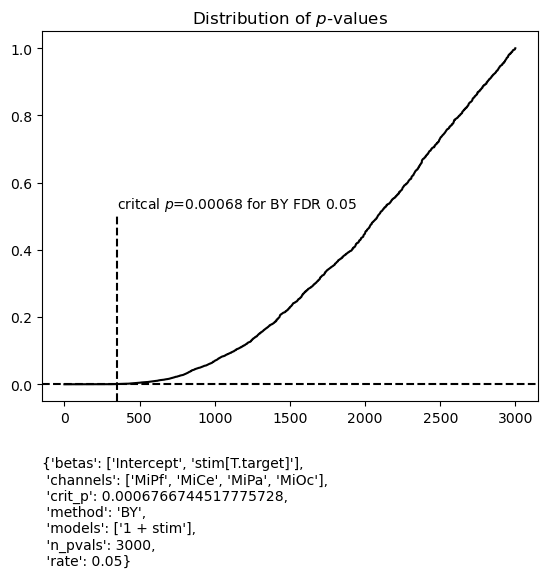
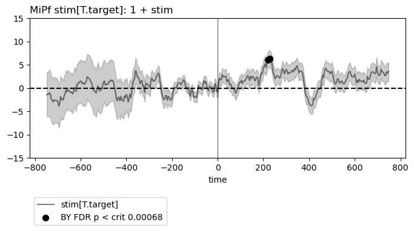
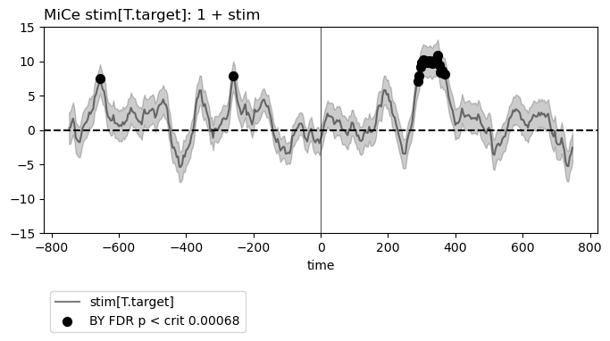
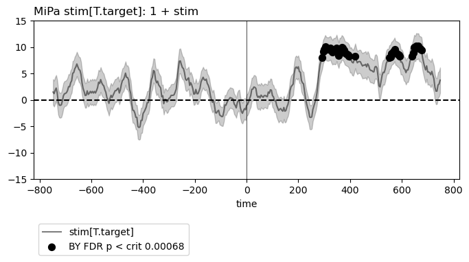
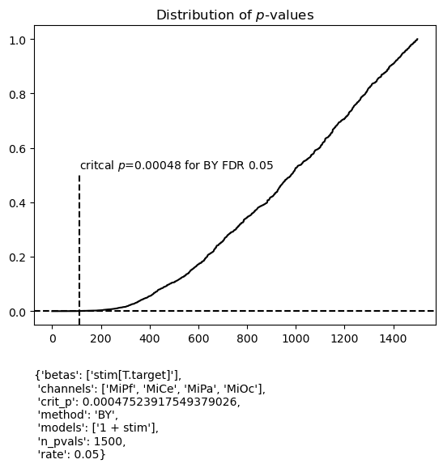
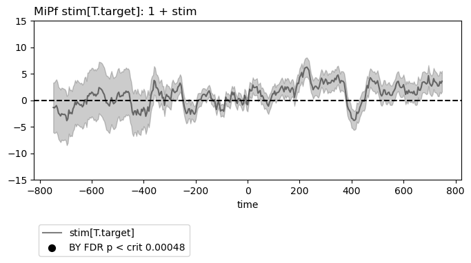
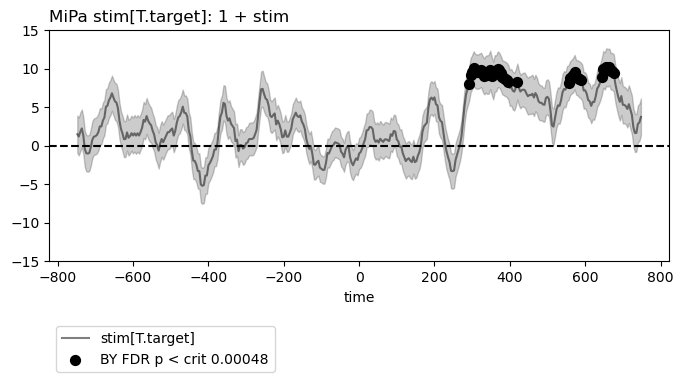
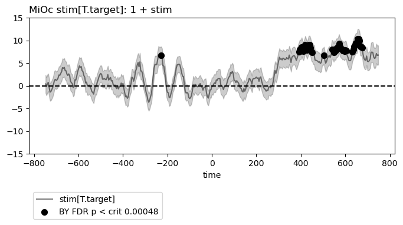

Note
Click here to download the full example code
False Discovery Rate (FDR) control for estimated predictor coefficients (betas)
The fitgrid summary utilities include an FDR critical value
calculator (fitgrid.utils.summary.summaries_fdr_control())
for the special case of estimated predictor coefficients
\(\hat{\beta}_i \neq 0\). The FDR methods implemented are from
[BenYek2001] and [BenHoc1995] and computed for whatever p-values
are returned by statsmodels for fitgrid.lm() and the lmerTest for
fitgrid.lmer().
Note
The family of tests for FDR control is assumed to be all and only the channels, models, and \(\hat{\beta}_i\) in the summary dataframe. The user must select the appropriate family of tests by slicing or stacking summary dataframes before running the FDR calculator.
This example is event-related EEG data from one individual in an auditory oddball paradigm that presents a series of beeps (“standards”) with occasional and unpredictable boops (“targets”). We may be interested in when (time) and where (channel) the brain response in these two conditions differs. FDR control is one procedure for guiding judgment about which differences are sufficiently large, relative to the variability of the observations, to be credibly attributed to the experimental manipulation rather than chance.
Prepare the data for modeling
import numpy as np
import pandas as pd
import fitgrid as fg
from fitgrid import DATA_DIR, sample_data
sample_data.get_file("sub000p3.ms1500.epochs.feather")
p3_epochs_df = pd.read_feather(DATA_DIR / "sub000p3.ms1500.epochs.feather")
# select stimulus types
p3_epochs_df = p3_epochs_df.query(
"stim in ['standard', 'target'] and tone in ['hi', 'lo']"
)
# look up the data QC flags and select the good epochs
good_epochs = p3_epochs_df.query("match_time == 0 and log_flags == 0")[
"epoch_id"
]
p3_epochs_df = p3_epochs_df.query("epoch_id in @good_epochs")
# rename the time stamp column
p3_epochs_df.rename(columns={"match_time": "time"}, inplace=True)
# select columns of interest for modeling
indices = ["epoch_id", "time"]
predictors = ["stim", "tone"] # categorical with 2 levels: standard, target
channels = ["MiPf", "MiCe", "MiPa", "MiOc"] # midline electrodes
p3_epochs_df = p3_epochs_df[indices + predictors + channels]
# set the epoch and time column index for fg.Epochs
p3_epochs_df.set_index(["epoch_id", "time"], inplace=True)
# "baseline", i.e., center each epoch on the 200 ms pre-stimulus interval
centered = []
for epoch_id, vals in p3_epochs_df.groupby("epoch_id"):
centered.append(
vals[channels]
- vals[channels].query("time >= -200 and time < 0").mean()
)
p3_epochs_df[channels] = pd.concat(centered)
# load data into fg.Epochs
p3_epochs_fg = fg.epochs_from_dataframe(
p3_epochs_df, epoch_id="epoch_id", time="time", channels=channels
)
Summarize a model or model stack
This example summarizes a simple model with one categorical predictor: stim (2 levels: standard, target).
lm_summary = fg.utils.summary.summarize(
p3_epochs_fg,
modeler="lm",
LHS=channels,
RHS=[
"1 + stim",
],
quiet=True,
)
lm_summary
Out:
/home/runner/work/fitgrid/fitgrid/fitgrid/utils/summary.py:145: FutureWarning: fitgrid summaries are in early days, subject to change
warnings.warn(
The summary dataframe includes the t statistic for the test of \(\hat{\beta} \neq 0\) for each model, beta, time and channel along with the corresponding p-values, uncorrected for multiple comparisons.
lm_summary.query("key in ['T-stat', 'P-val']")
FDR control for model summaries
Here is the fitgrid default Benjamini and Yekutieli FDR control at 0.05. Note, the family of tests is all the estimated betas in the summary dataframe.
Out of curiosity, how many p-values are below the unadjusted p = 0.05?
Out:
There are 906/3000 = 0.302 below unadjusted p=0.05
Out of curiosity, how many are below critical p for this FDR control?
Out:
There are 349/3000 = 0.116 below critical p = 0.00068 for FDR control
The fitgrid utilities can display FDR results along with the time series of coefficient estimates, the \(\hat\beta_i\) (see Beta plots with FDR control for more examples). Four midline scalp channels are shown here. The black dots indicate where the p-value is below critical p for the specified FDR control procedure. Their latency in an interval around 300 - 400 ms post-stimulus, predominantly over central and posterior scalp [MiCe, MiPa, MiOc], is in agreement with the P300 average ERP effect typically observed in this kind of auditory oddball paradigm.
figs_a = fg.utils.summary.plot_betas(
lm_summary,
fdr_kw={"method": "BY", "rate": 0.05},
betas=["stim[T.target]"],
scatter_size=50,
)
for fig in figs_a:
ax = fig.get_axes()[0]
ax.axvline(0, lw=0.5, color="black", zorder=0)
ax.set(ylim=(-15, 15))
- 
- 
- 
Out:
/home/runner/work/fitgrid/fitgrid/fitgrid/utils/summary.py:919: UserWarning: FDR test family is for **ALL** models, betas, and channels in the summary dataframe not just those selected for plotting.
warnings.warn(fdr_msg)
{'betas': ['Intercept', 'stim[T.target]'],
'channels': ['MiPf', 'MiCe', 'MiPa', 'MiOc'],
'crit_p': 0.0006766744517775476,
'method': 'BY',
'models': ['1 + stim'],
'n_pvals': 3000,
'rate': 0.05}
Selecting the family of tests
For this application, it might be argued that tests of \(\hat\beta_\mathsf{Intercept} \neq 0\) do not belong in the family of tests for controlling FDR for tests of \(\hat\beta_\mathsf{stim[T.target]} \neq 0\).
If so, it is straightforward to select the desired test family from the summary data frame as shown which halves the size of the test family. In this instance, critical p changes only slightly so the choice of family is largely inconsequential for the systematic patterns though in other cases it may matter.
figs_b = fg.utils.summary.plot_betas(
lm_summary.query("beta == 'stim[T.target]'"), # select these betas
fdr_kw={"method": "BY", "rate": 0.05},
betas=["stim[T.target]"],
scatter_size=50,
)
for fig in figs_b:
fig.get_axes()[0].set(ylim=(-15, 15))
- 
- 
- 
- 
Out:
{'betas': ['stim[T.target]'],
'channels': ['MiPf', 'MiCe', 'MiPa', 'MiOc'],
'crit_p': 0.00047523917549378787,
'method': 'BY',
'models': ['1 + stim'],
'n_pvals': 1500,
'rate': 0.05}
Total running time of the script: ( 0 minutes 17.291 seconds)